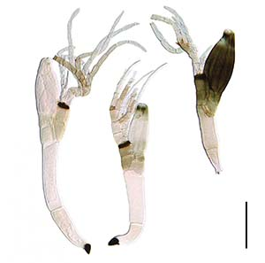

Вірусологія? Ні, ми про таке не чули...
Біологія відповідає на запитання – «Що ми будемо їсти через десять років?» , і «Як ми будемо лікуватися?», тому біологія потрібна, і людям потрібно знати основи біології.
Біологія надзвичайно багатогранна наука, і жодна людина,тварина чи рослина
не вижеве без біології.
Ця наука пов’язує безліч мікро наук.
Сьогодні я вам розповім про Вірусологію – це галузь науки, яка вивчає властивості вірусів людини. Кожен вірус передається переважно під час близьких контактів і повітряно -капельно, коли людина кашляє або чхає.
Доречі є цікавий факт що на честь карантину названо гриб Laboulbenia quarantenae.
В недалекому 2020 році, спіткала нас така хвороба, яка знайшла свій початок у Китаї, та зовсім незабаром, хвороба дійшла до всіх куточків світу, хвороба передавалась повітряно-крапельним шляхом.
Згодом з’явились різновиди хвороби та часто різні симптоми. В одиниць людей хвороба переноситься безсимптомно, в інших даються важкі ускладнення, у деяких пропадає смак та нюх та кажуть, що це не важка форма хвороби.
Загалом у світі: майже 261,8 млн людей захворіли від початку пандемії, понад 5,2 млн померли, більше 236,4 млн вилікувалися.
В Україні протягом доби 28 листопада, за даними МОЗ, зафіксували 5 804 нових підтверджених випадки COVID-19: одужали 10 477 пацієнтів, померли 297 людей.
Трохи з часом, виявили новий різновид коронавірусу, зокрема «Дельта». Штам коронавірусу "Дельта" вперше виявили восени минулого року в Індії. Саме тому його тривалий час називали індійським,
аж поки Всесвітня організація охорони здоров'я не вирішила відмовитися від географічних прив'язок у назвах вірусів. У випадку зараження "Дельтою" симптоми можуть бути традиційними для Covid-19 - кашель,
лихоманка, втрата відчуття запаху і смаку. Але при цьому дослідник захворювання, професор Тім Спектор, зазначав, що з новим штамом такі симптоми зустрічаються рідше.
Україна посилює захист від коронавірусу штаму «Омікрон», який шириться світом. Наразі новий варіант вірусу виявили в низці країн, серед яких Гонконг, Ізраїль, Німеччина, Велика Британія, Канада та Нідерланди.
Влада останньої країни заявила про мінімум 13 підтверджених випадків інфікування людей, що прилетіли до Амстердама з Південно-Африканської
Республіки (ПАР).
На мою думку, щодо цих вірусів, жоден з нас не вбережений від них, та жодна вакцина не допоможе,
хто має захворіти той захворіє, в багатьох випадках, як то кажуть «хвороба сама до мене прийшла», ми не в змозі на жаль
вберегтись від цього вірусу, кожного дня, кожного разу кількість хворих збільшується.
Також цікавий факт про корона вірус, за весь час пандемії в країні:
захворіло (особи) – 3 427 827,
одужало (особи) – 2 920 714,
летальних випадків – 85 414,
проведено ПЛР-тестувань – 15 832 613.